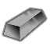
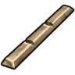
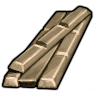
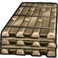
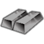
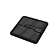
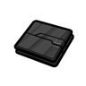
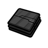

stuffProps 里含 Metallic/StrongMetallic/RuggedMetallic/… —— 能在工作台/建筑里当材质选用;组内按"能顶替到哪档金属"排
太空HSK本地补丁×1上游补丁×3代钢级·太空·镍钛合金NitinolAlloy
代钢级可塑成品 940 件:家具建筑647 · 防具142 · 穿戴件40 · 近战工具96 · 远程武器7 · 其它8
金属全谱469 + 常规硬性件328 + 重机电(舱体/发电机/扫描仪)143
顶替 整档替到 代钢级·中世纪·青铜(940 件基准,含其下全部金属);比钢 +0/−1 件 —— 做不了 无菌瓦屋顶
① 起点 · Core_SK 的 Defs 写 Things/Item/Ingot (175,175,175)

ACore_SK BCore_SK
BCore_SK CCore_SK
CCore_SK② Vile 换成 Things/Item/Material/Nitinol (255,225,193) ← Alloys_HighTech.xml

aVile's Materials Science
bVile's Materials Science
cVile's Materials Science③ 生效(终态) Things/Item/Ingot (175,175,175) ← 10_Vile贴图还原.xml
 ACore_SK
ACore_SK
BCore_SKCCore_SKThings/Item/Ingot StackCount (175,175,175)(255,225,193)被1条配方消耗贴图链 3 段
护甲 1.52/1.22/0.16 利钝 1.40/1.22 价值 45 质量 0.35 Bulk 0.35
stuff Metallic, RuggedMetallic, StrongMetallic
HSK USLDBar
产自 Make Nitinol x25(电弧熔炉/Metal processing V) ; Smelt nitinol alloy(无工作台)
源 Core_SK
Items_Resource_Alloys_Hightech.xml
太空按消耗它的配方研究档本地美狐军规陶瓷Miho_MilitaryGradeBalisticCeramics
强化工程级可塑成品 586 件:家具建筑487 · 防具34 · 穿戴件19 · 近战工具44 · 其它2
金属全谱469 + 石材件(墙/桌/祭坛)93 + 陶瓷件24
vs 塑料多 466 件(美狐动力爪、临时保险丝…);比钢少 443 件 —— 如 凤凰装甲、特种部队头盔… 都选不到它

生效·aHSK工业科研大修
生效·bHSK工业科研大修
生效·cHSK工业科研大修Things/Items/MihoMGBCreamic StackCount (32,32,32)被21条配方消耗
护甲 1.15/0.40/1.50 利钝 1/0.60 价值 7.5 质量 0.50 Bulk —
stuff Ceramic, Metallic, Metallic_Weapon, Steeled, Stony
HSK Ceramic
产自 make military grade ceramic(玻璃加工台/Glass making II)
源 HSK工业科研大修
Items_Ceramics.xml
极致Vile本地补丁×1超钢级·极致·雅特加超聚合物Yautjavium
超钢级可塑成品 999 件:家具建筑677 · 防具142 · 穿戴件40 · 近战工具116 · 远程武器7 · 其它17
金属全谱467 + 常规硬性件324 + 重机电(舱体/发电机/扫描仪)140 + 飞船构件+persona武器51
顶替 整档替到 钛铁合金(986 件基准,含其下全部金属);比钢 +59/−1 件 —— 做不了 无菌瓦屋顶;钢做不了它能做 古代科技结构 A-1「弓」、动力短剑。…
 生效·YautjaviumHSK修复整合
生效·YautjaviumHSK修复整合Things/Item/Material/Yautjavium/Yautjavium Single (218,230,26)(218,230,26)
护甲 1.85/1.70/0.25 利钝 2.40/1.50 价值 80 质量 0.25 Bulk 0.35
stuff CorrosionResistant, LightMaterial, Metallic, RareMetallic, RuggedMetallic, SolidMetallic, StrongMetallic
HSK USLDBar, LightBar
产自 Fabricate Yautjavium x15(量子制造器)
源 Vile's Materials Science
Alloys_0_UltraTech.xml